Projektets mål var at lave en ny, responsiv hjemmeside til Aalborg Smerte- og Sportsklinik, som er en specialiseret og privat fysipterapi-klinik i Gug.
Vi tog selv kontakt til kunden, da vi i research-fasen havde fundet en række udfordringer med kundens nuværende hjemmeside, som vi syntes var interessante at ændre.
Projektet var eksamensprojektet i slutningen af 2. semester og varede 6 uger.
Projektets helt store fokus var at redesigne informationsarkitekturen, som er problematisk på klinikkens nuværende hjemmeside. Det er meget svært at finde de informationer, man leder efter, og meget af indholdet er forældet. Derudover er der også store problemer med det visuelle hieraki på siden og opbygning ift. bl.a SEO.
Derfor var det en spændende opgave, som startede med brugerundersøgelser og udviklingen af en ny informationsarkitektur.
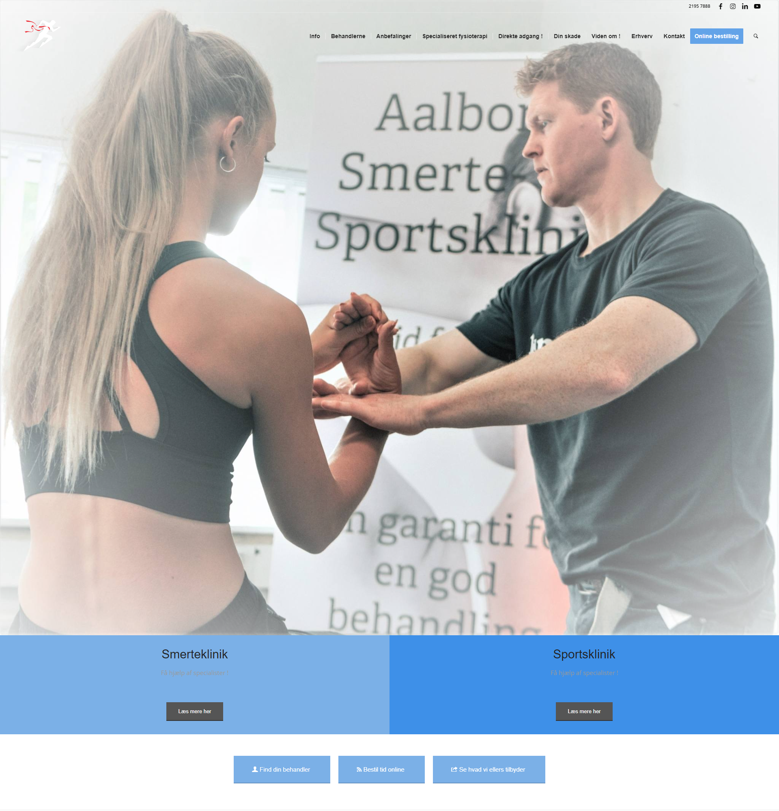
Hero på Aalborg Smerte- og Sportskliniks originale hjemmeside.
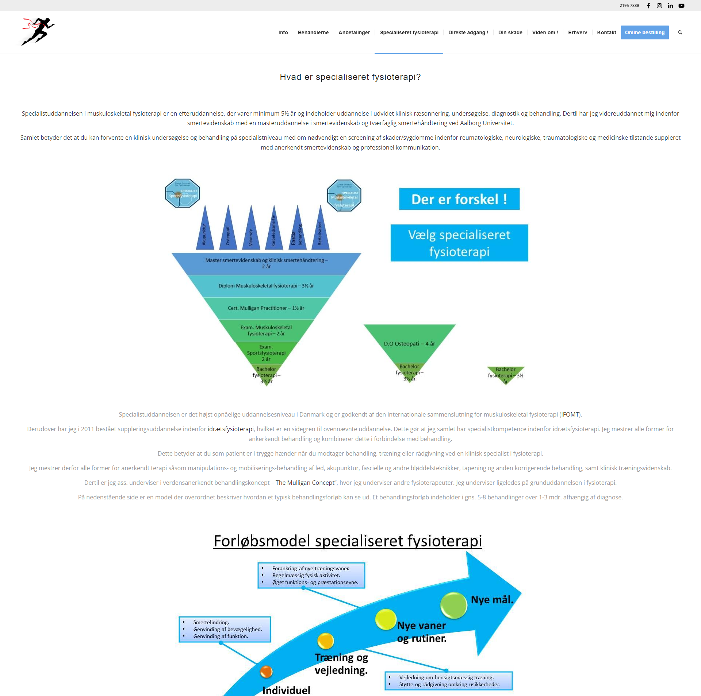
Side om fysioterapi på klinikkens originale hjemmeside.
Interviews og research
For at skabe en brugervenlig ny hjemmeside, tog vi udgangspunkt i brugercentreret design. Her ligger brugerundersøgelser til grund for den videre udvikling, og derfor var det vigtigt at få potentielle brugere af klinikken i tale.
Da vi fra vores snak med kunden vidste, at den primære bruger er 25-60 år gammel, tog vi udganspunt i den aldersgruppe, og udvalgte interviewpersoner, som havde været til fysioterapeut inden for de seneste to år og havde økonomisk overskud til at vælge en fysioterapeut uden offentligt tilskud.
Vi gennemførte seks kvalitative interviews, tematiserede dem og udarbejdede på den baggrund første udgave af en ny og mere brugervenlig informationsarkitektur
Vi lavede efterfølgende flere iterationer af informationsarkitekturen for at finde den helt rigtige løsning, som derefter blev brugertestet ad flere omgange.
Content sitemap lavet på baggrund af tematisering, affinity diagrams og card sorting.
Brugertest
For at sikre at vores navigation og informationsarkitektur var brugervenlig, udførte vi flere slags brugertest.
Think aloud test
Vi lavede bl.a. to think aloud test på sammenlagt 10 personer. En think aloud test er en brugertest, hvor en bruger skal udføre en række opgaver på det nye website og samtidig sige alle deres tanker højt. Det er med til at fange eventuelle problemer, der måtte være med at navigere rundt på siden.
Card sorting
Da der var meget indhold på siden og det var svært at få det kategoriseret i navigationen, udførte vi også en card sorting, hvor vi fik en ræke testpersoner til at kategorisere alle underpunkterne i navigationen. Card sorting afslørede en række udfordringer i vores navigation ift. punkterne 'Det behandler vi' og 'vores metoder'
Tree testing
For at teste navigationen gennemførte vi også en tree-test.
Udvikling af indhold
Under udviklingen af indhold var det vigtigt for os, at indholdet var brugercentreret og løsningsorienteret, og derfor besluttede vi os for at tage udgangspunkt i vores value proposition (sat lidt på spidsen):
Vi kan hjælpe dig af med dine smerter
Det gjorde vi, fordi det var det vores research og interviews pegede på var den primære årsag til at gå til fysioterapeut, og endda være villig til at undvære det offentlige tilskud. Samtidig havde vi også at gå med en utrolig dygtig fysioterapeut, som har et ry i byen for at kunne fjerne selv de sværeste smerter (og anmeldelser der bakkede det op).
UX Writing
Indholdet gennemgik flere iterationer igennem forløbet og tog bl.a. afsæt i de løbende brugertest vi kørte på sitet.
Vi brugte principperne i UX Writing til at forbedre teksterne undervejs. Her ses et eksempel fra to iterationer af vore hero-sektion.
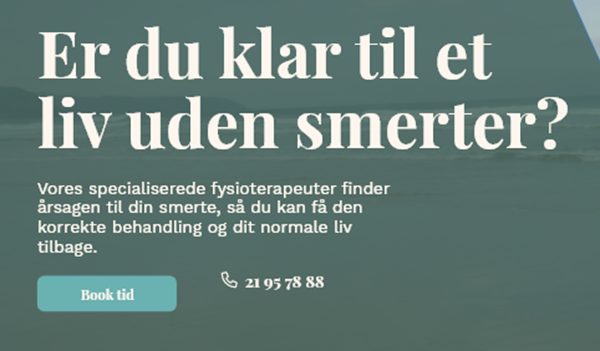
Hero-tekst i version 1.
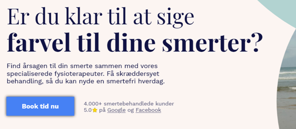
Hero-tekst i version 2.
Designprocessen
Da vi havde et content sitemap og et fornuftigt overblik over indholdet, gik designprocessen i gang.
Skitser
Vi startede med at skitsere på en whiteboard, så vi alle var enige om de overordnede linjer.
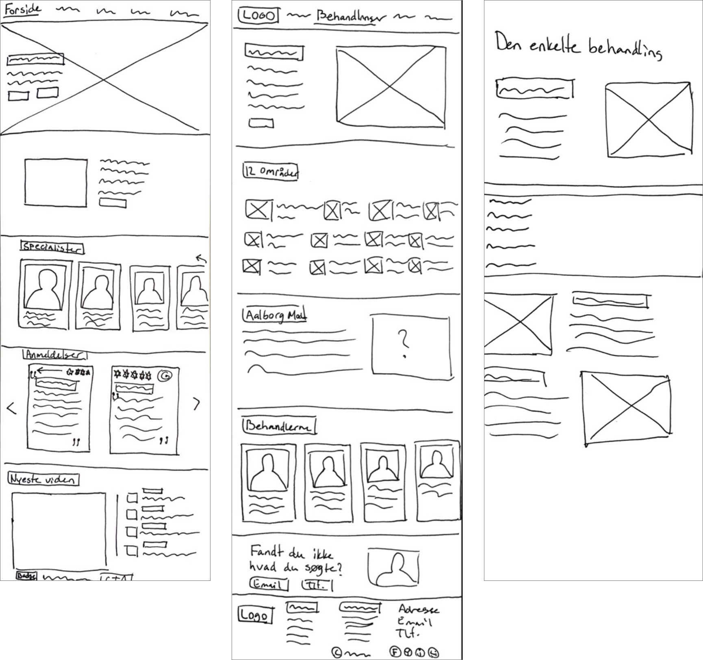
Tre af skitserne.
Designvalg
Herefter øgede vi fidelity og lavede en wireframe.
Det endte med at blive et design, som tog udgangspunkt i bløde, afdæmpede farver og en serif-font, som udtrykte seriøsitet og eksklusivitet.
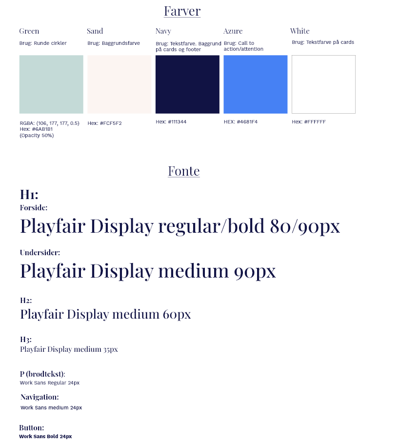
Designguide: Valg af farver og fonte
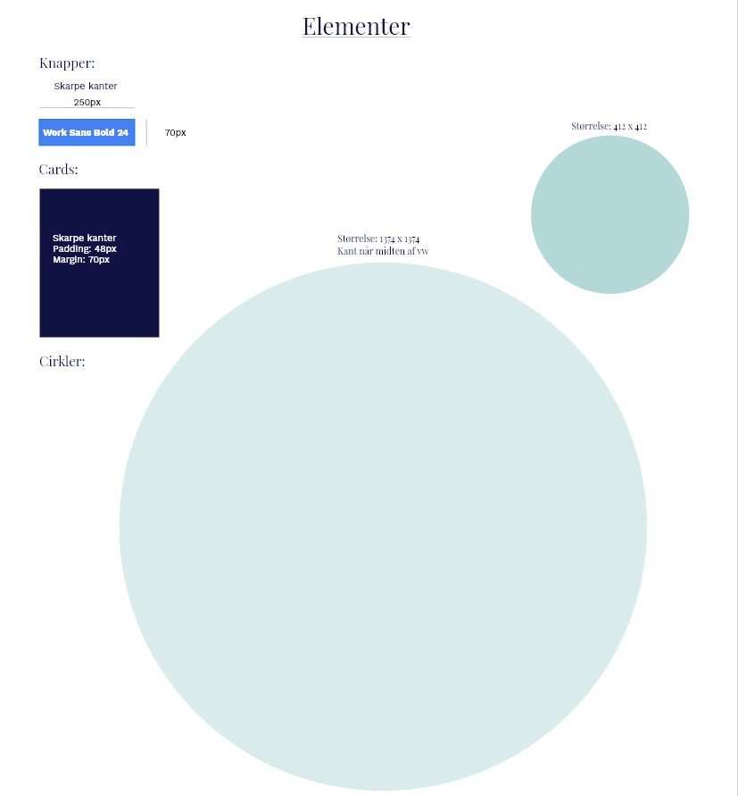
Designguide: Elementer
Mockup
Nu kom turen til at designe en hifi-mockup af siden, og vi kom igennem flere iterationer, før vi fandt et design, vi følte udtrykkede eksklusivitet og seriøsitet, men samtidig også fremstod moderne.
Det endelige design tog udgangspunkt i cirkler, som blev et gennemgående baggrundselement og udgangspunktet for alle billeder.
Mockup-versioner af hero-sektionen
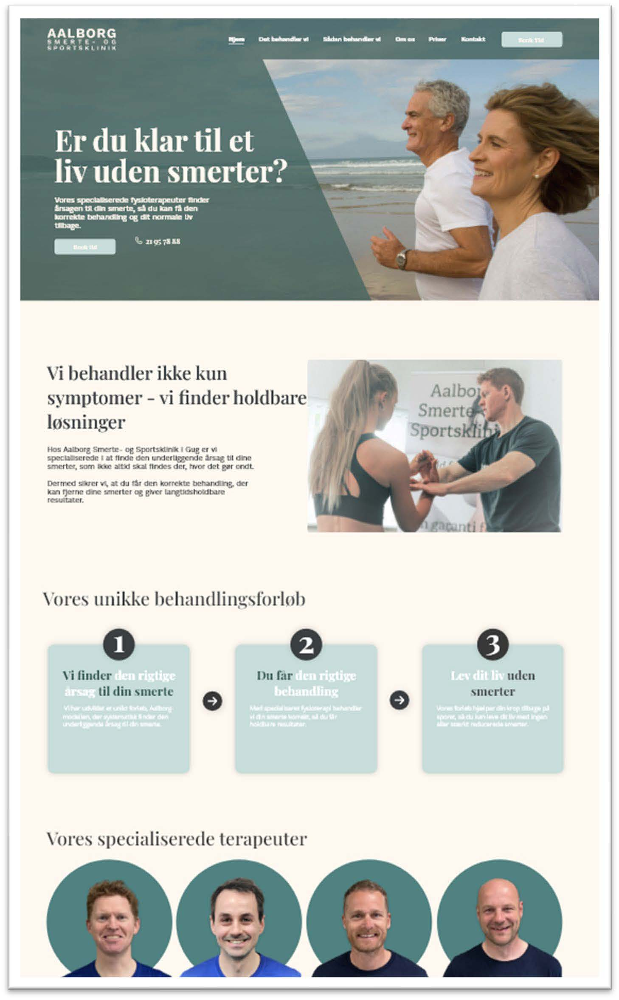
Hero version 1.
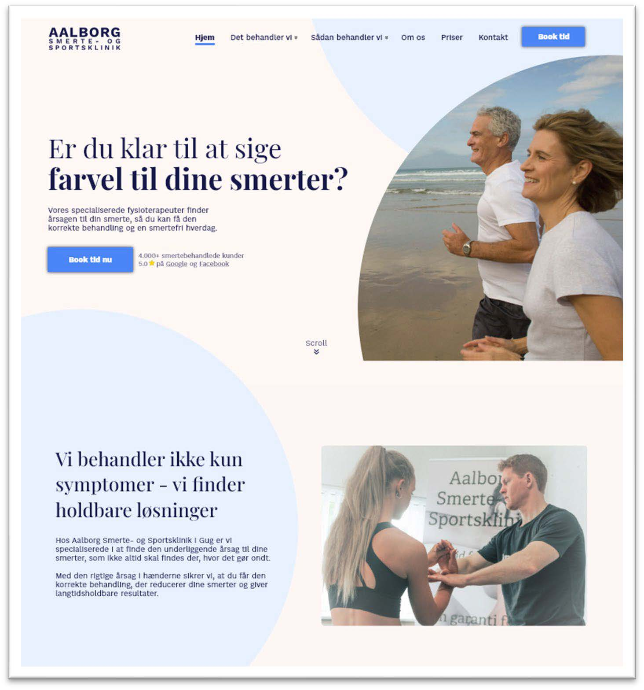
Hero version 2.
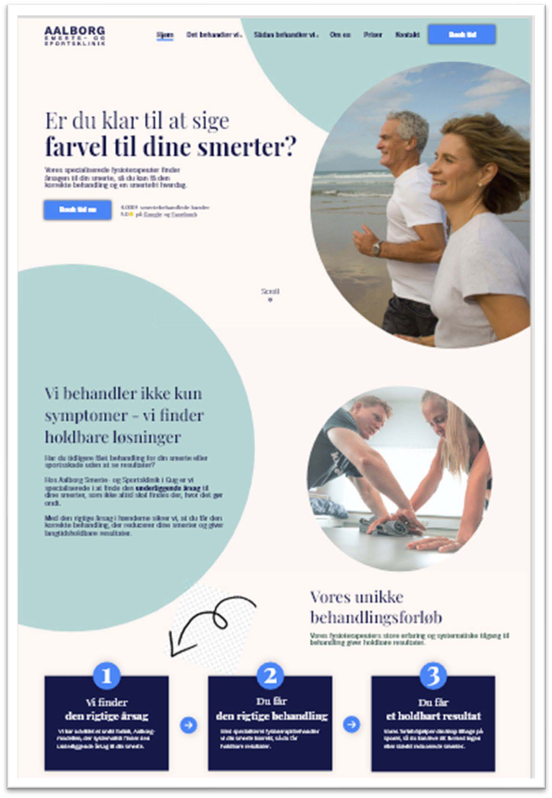
Hero version 3.
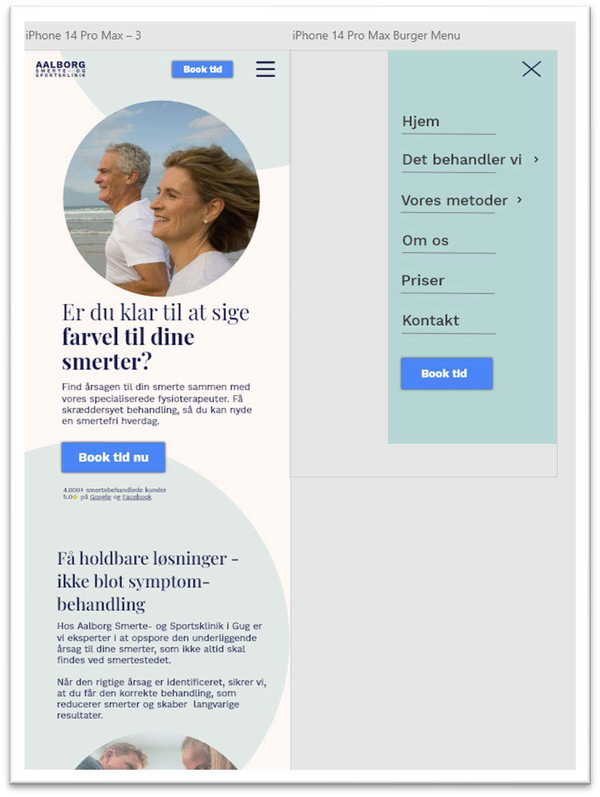
Mobil-mockup af version 3.
Realisering
Da vi var tilfreds med designet, og det var blevet testet på potentielle brugere, gik vi videre til realiseringen af projektet.
Det var et krav, at vi I projektet hentede indhold fra et headless Wordpress CMS, som blev sat op med advanced custom fields.
Vi lagde vægt på at give kunden så stor fleksibilitet som muligt, og gjorde det muligt at ændre næsten al tekst og billeder på siden i CMS'et.
Vi kodede siden med HTML, CSS og Javascript og lavede funktioner som fx. sticky nav og slider.
Vi laved også slide-up-animationer i Vanilla Javascript, som gjorde siden et moderne udtryk.
Konklusion
Vi kom i mål med at lave et professionelt redesign af Aalborg Smerte- og Sportskliniks hjemmeside. Der var stor fokus på navigationen og informationsarkitekturen, som - bekræftet af brugertest - var brugervenlig og gjorde siden nem at finde rundt på.
Vi gjorde brug af headless CMS, og laved en prototype på en løsning for kunden, som gav stor fleksibilitet ift. selv at kunne ændre mange elementer på siden.